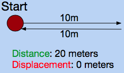

Kinematics is the study of motion. In Kinematics, there are many terms that refer to properties of motion, including distance, time, speed, etc. When referring to these properties, it is important to distinguish between vector and scalar properties. A scalar property is one that has magnitude, but not direction. A vector has a direction and a magnitude. For example, distance is a scalar property, but displacement is a vector property. This can be confusing, since they both use the same unit (the meter).
Let's say you walk 10 meters to the right, and then walk 10 meters to the left. How far have you traveled? If we're talking about distance, you have traveled 20 meters. If we're talking about displacement, you have been displaced 0 meters. Since distance is a scalar quantity, it simply represents the net amount of meters you've traveled. However, displacement is vector valued. This means that direction matters, so displacement represents the distance between where you started, and where you ended up.
This interactive program allows you to see the relationship between distance and displacement. Click on the window, and use the arrow keys to move the circle around. At the top right corner, you will see the distance traveled and meters displaced.